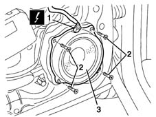

5570T90 front speaker - r r
- Path
- Procedures > 55 ELECTRICAL EQUIPMENT > 5570 ACCESSORIES > 5570T car radio and car telephone > 5570T90 front speaker - r r
- Kind
- repair procedure (removal / refitting; the operation number is the code)
- Applies to
- all engines; all production periods
- Interactive page
- https://sloeber94.github.io/elrnDB-lYpsln/en/#/2429443
Applies to: all engines; all production periods
 Removing
Removing
 Refitting
Refitting7005C44 interior handle panel - r r
7005M11 Driver's front door electric window control SWITCH - R.R.
7005M12 passenger side front door electrically operated window switch - r r
7005E12 corner cover of one front side door, lh or rh r r
7005E08 front side door interior panel r r
1. Disconnect the loudspeaker's electrical connection.
 | Name | Connector |
|---|---|---|
1 | Speaker in driver's .front door |
| Name | Connector |
|---|---|---|
1 | Speaker in front passenger door |
2. Undo the bolts.
3. Remove the speaker.

Applies to: all engines; all production periods
Refitting
RemovingCheck that the speaker is not damaged.
Position the speaker and secure it using the bolts.
Connect the electrical connection.
7005E08 front side door interior panel r r
7005E12 corner cover of one front side door, lh or rh r r
7005M12 passenger side front door electrically operated window switch - r r
7005M11 Driver's front door electric window control SWITCH - R.R.
7005C44 interior handle panel - r r
Check the operation of the speaker.
Topics linked from this page (7)
- 7005C44 interior handle panel - r r
- 7005E08 front side door interior panel r r
- 7005E12 corner cover of one front side door, lh or rh r r
- 7005M11 Driver's front door electric window control SWITCH - R.R.
- 7005M12 passenger side front door electrically operated window switch - r r
- P35 Speaker in driver's .front door
- P36 Speaker in front passenger door